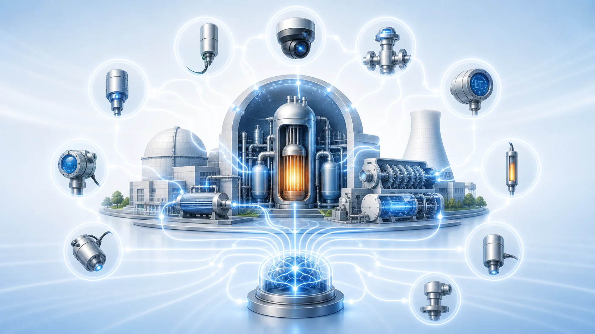
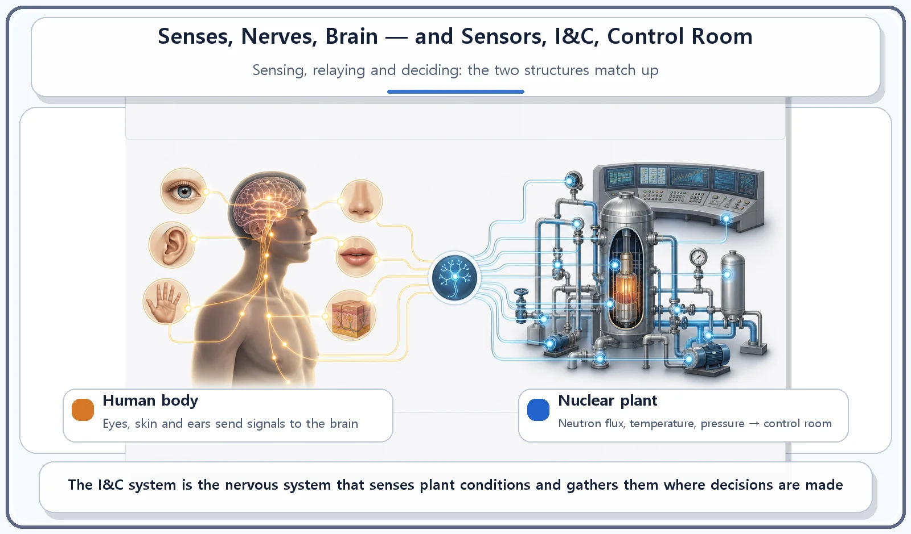
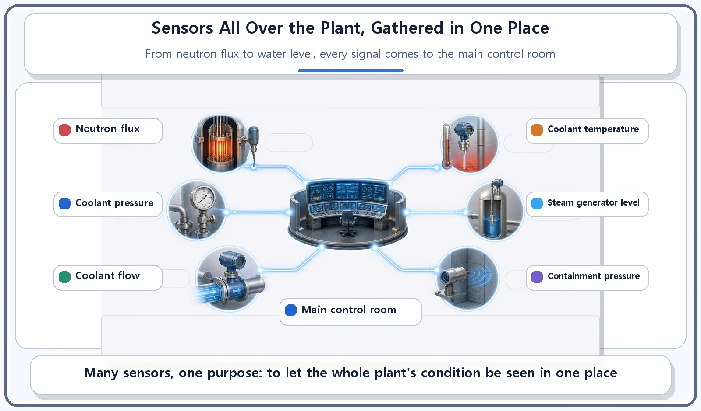

Reactor Components · 068
A Nuclear Plant Has Senses Too — The Instrumentation and Control System
Sensors are the senses, signal lines the nerves, and the main control room the brain. Some responses are automatic, like a reflex.

The instrumentation and control (I&C) system is the plant's senses and nervous system. Sensors measure neutron flux, coolant temperature, pressure and flow, steam generator level and much more; the readings are shown in real time in the main control room, where operators act on them, while the fastest responses are automatic.
Touch a hot pan and your hand jerks back
Brush your fingertips against a hot pan and you pull your hand away before you've had time to think. Your skin senses the heat, your nerves relay that signal in an instant, and your body reacts at once. All day long, your body works this way: sense organs such as your eyes, ears and skin keep track of what's going on around you, and your nerves carry that information to your brain, which decides what to do.
When we look at a nuclear power plant, we usually focus on its "body": the parts that make power, carry heat and generate electricity. Today's topic is different. It is the system that plays the role of the plant's senses and nervous system, feeling and relaying the condition of all those parts in real time: the instrumentation and control system, or I&C for short.
I&C: the plant's eyes and nerves
The instrumentation and control system takes in signals from the huge number of sensors installed throughout the reactor and the rest of the plant: thermometers, pressure gauges, neutron flux detectors (instruments that measure how many neutrons are flying through the core, which tracks how hard the reactor is working), water-level gauges and more. From those signals it builds a real-time picture of the plant's current state and, when needed, sends control signals out to the relevant equipment.
Almost every physical quantity needed to run the plant is measured and monitored through this system: the neutron flux in the reactor core, the temperature, pressure and flow rate of the coolant, the water level in the steam generators, and so on.
The measurements are displayed in real time to the operators in the main control room, and the operators use that information to carry out whatever actions are needed, such as adjusting the position of the control rods. Some responses have to happen far faster than a human could decide, and those are handled by automatic control.

Why compare it to the senses?
Your body senses temperature, pain and balance through your eyes, ears and skin, then sends that information along your nerves to your brain so you can respond. In the same way, the I&C system "feels" the condition of every corner of the plant through its sensors and relays that information to the main control room, which acts as the plant's brain. The analogy shouldn't be pushed too far, but the basic division of labor (sensors as sense organs, signal lines as nerves, the control room as the brain) holds up well.
And just as you snatch your hand back from something hot without stopping to think, part of the plant is designed to react immediately and automatically, without waiting for a human decision, when certain danger signals are detected. That automatic shutdown function belongs to a separate safety system called the reactor protection system, which deserves an explanation of its own.

Where people get mixed up
The I&C system and the reactor protection system are not the same thing. The I&C system is the overall "sensing and operating support" system that detects plant conditions and helps the operators run the plant. The reactor protection system is a specialized safety system that uses that information to shut the reactor down automatically when a danger signal is detected. I&C is the broader concept; the protection system is the special part within it that is tied directly to safety.
One faulty sensor does not mean an immediate accident. Plants are normally designed with several sensors measuring the same thing and with cross-checks between them, so that the overall picture stays reliable. It's a bit like covering one eye for a moment: you can still work out what's happening around you with your other senses.
| Instrumentation and control system | Reactor protection system | |
|---|---|---|
| Scope | Broad: sensing and operating support for the whole plant | Specialized: the safety-critical part within it |
| Main job | Measure, display, and send control signals; supports operators and automatic control | Shut the reactor down automatically when a danger signal is detected |
| Body analogy | Senses and nerves | Reflex |
The short version
- The I&C system detects plant conditions with sensors all over the plant and delivers and displays that information in the main control room.
- Like the body's sense organs, nerves and brain, the plant's sensors, I&C system and control room pass information along a chain.
- Some parts react automatically to danger signals without waiting for a human decision; that function belongs to the reactor protection system.
- Sensors are installed with redundancy, so one faulty reading does not throw off the overall judgment.
If I&C is the plant's sense of touch, sight and balance, the reactor protection system is its reflex: the part that actually stops the reactor when a danger signal crosses the line.